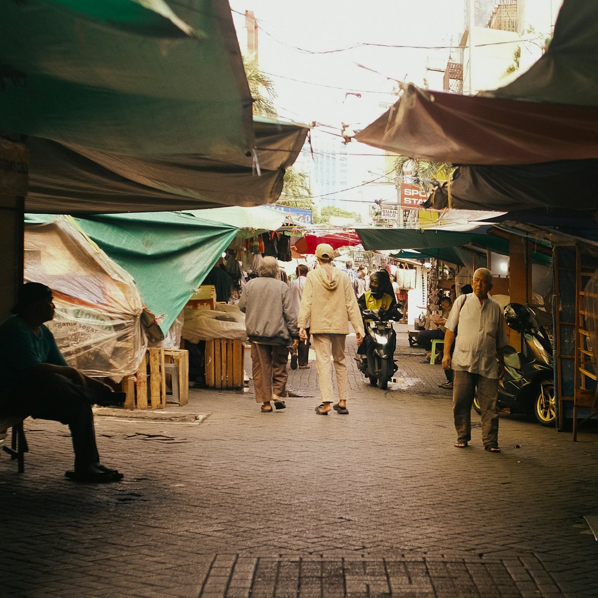
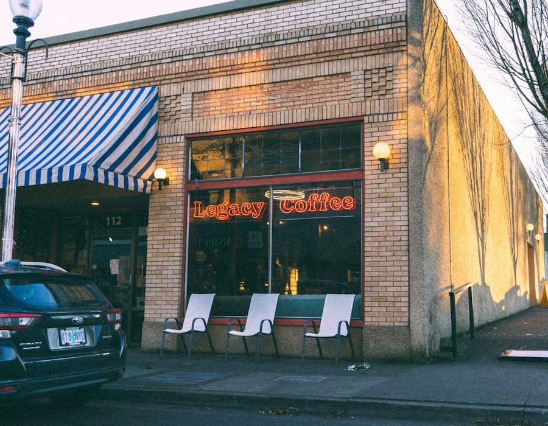

Mulai dari tetangga,
tumbuh jadi saudara
Geser untuk lihat lainnya

SERBARUKUN
Geser untuk lihat lainnya

Setiap bulan Juli selalu jadi pengingat perjalanan kecil RUKUN. Bermula dari satu etalase di gang Kemang, kini RUKUN menyapa tetangga di banyak kota dan pernah membawa hangatnya ngopi bareng sampai ke seberang lautan. Dengan lebih dari 50 toko, barista kami siap menyambut setiap tetangga setiap hari. Tumbuh bukan cuma soal jumlah toko atau angka penjualan, tapi tentang hadir untuk satu sama lain, saling menjaga, dan saling membantu. Sepuluh tahun ini mengajak kita memaknai lagi setiap sapa dan setiap kebersamaan. Harapannya sederhana: semoga di setiap langkahnya RUKUN terus membawa kebaikan yang berputar. Mari rayakan umur baru dengan hangat dan penuh kebersamaan. Terima kasih sudah menemani perjalanan ini, tetangga.
10 Tahun
Melangkah Seirama
SEIRAMA — Rukun Bersama
0:00
Lebih dari sekadar lagu, SEIRAMA adalah surat terima kasih untuk semua yang tumbuh bersama RUKUN: keluarga, barista, dan tetangga di mana pun berada.
Liriknya mengajak kembali ke hal-hal kecil yang memulai semuanya: obrolan ringan jam tujuh pagi, senyum di balik mesin kopi, dan rasa saling jaga yang jadi napas rukun bertetangga.
SEIRAMA sudah bisa didengarkan di sini, putar dan nikmati bersama!

Sejak 2015, RUKUN tumbuh dari rasa Nusantara dan semangat bertetangga.
Kini membawa cerita dan ragam rasa Indonesia sampai ke Fitzroy, Melbourne.
Yuk, kabarkan dan jadi bagian dari tumbuhnya budaya kopi susu Jakarta di Australia,
Bersama RUKUN.